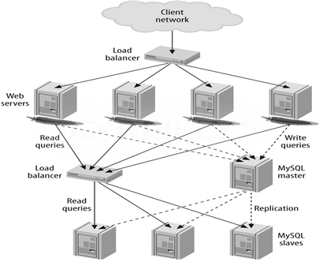
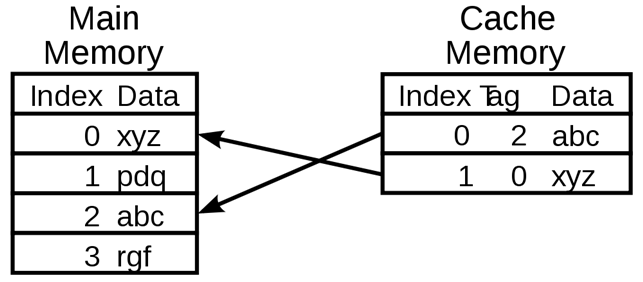

캐싱을 통한 효율적 서버 아키텍쳐의 구현
- 국문 연구 주제: 캐싱을 통한 효율적 서버 아키텍쳐의 구현
- 영문 연구 주제: Implementing an efficient server architecture through caching
- 연구 분야: Server-Side Programming, Performance Optimization, Memcached
연구 내용 요약문
연구 동기
최근 들어 외국 소셜 네트워크 서비스(Social Network Sevice, aka SNS) ‘트위터’의 인기가 폭등하고 있다. 트위터가 처리하는 요청의 개수는 천문학적으로 많은데, 하루 검색 요청만 6억 건이 넘고, API를 통해 들어오는 트윗이 30억 건이 넘는다고 한다. 이 많은 요청을 감당할 수 있는 서버 시스템을 어떻게 구성할 수 있는지에 대한 의문으로 이 연구를 시작하게 되었다.
연구내용 및 방법
웹 서비스로 들어오는 요청을 감당하지 못할 경우의 예를 찾아보고, 그 원인을 분석하고 부작용을 알아본다.트위터가 사용하는 서버에 대한 하드웨어 스펙을 찾아보고, 일반적인 구현 방법으로 그 하드웨어 스펙으로 트위터가 처리하는 양의 자료를 처리할 수 있는지 알아본다. 만약 일반적인 구현 방법으로 자료를 처리할 수 없다면, 어떻게 이를 실현하였는지 알아본다.트위터 서버가 사용하는 소프트웨어를 알아보고, 연구에 사용한 컴퓨터로 직접 트위터 서버 소프트웨어의 구성을 적용하여, 그 시너지 효과나 일반적인 구현과의 성능 차이를 조사해 본다.
연구 후 느낀점: 성취감보다 미련이 더 많이 남는 연구였다. 아마 실험 시스템을 마련하는 과정에 있어서의 시행착오가 연구 기간의 2/3를 넘을 것이고, 많은 실패와 시간제한 때문에 포기한 부분도 많았다. 하지만, 연구 과정에서 많은 것을 배워 성취감을 느낄 줄 알고 있었고, 또 누군가가 이 문서를 보고 작은 도움이나마 받을 것이라는 것을 알고 있었기 때문에 이 연구를 마칠 수 있었다고 생각한다.
연구의 필요성 및 목적
최근 들어 인터넷 기술 분야에서 하루가 다르게 많은 일이 일어나고 있다. HTML5, AJAX, CSS3, OPEN API 등의 표준안과 다양한 응용 기술이 개발되고, 이 기술들을 기반으로 한 서비스들도 많아지고 있다. 이러한 서비스들이 기하급수적으로 사용자의 수를 확보하고, 서비스를 제공하는 서버들이 처리해야 할 요청(request)들의 개수도 따라 증가하게 되었다.
하지만, 과유불급이라는 말이 있듯이, 이 많은 요청에 인해 서버에 걸리는 부하(workload)를 제대로 처리하지 못해서 사용자들에게 혼란을 주거나 다른 관련된 다른 서비스 사용까지 어렵게 한다면 재산상 피해뿐만 아니라 해당 서비스에 대한 사용자들의 인식이 부정적으로 바뀌어서 회복할 수 없는 손실을 볼 가능성이 크다. 이러한 일이 일어나는 이유는 물론 서버의 하드웨어 스펙이 딸려서 일수도 있겠지만, 무엇보다도 서버 운영에 사용하는 소프트웨어들의 결합이나 최적화가 제대로, 또는 충분히 이루어지지 않은 경우가 대부분이다.
우리나라에서 이러한 일이 일어난 예를 들자면, ‘원어데이’의 원박스 사건, ’다음 아고라‘ 서명수 조작 논란 등이 있다. 이러한 불상사들이 일어난 적이 있고, 이에 대한 적절한 예방 조치를 취하지 않는다면 미래에 똑같은 일이 일어날 확률은 100%에 가깝다. 그렇다면 과연, 이러한 일들이 벌어지는 것을 막는 방법에는 어떤 것들이 있을까?
외국 벤처 기업 ‘트위터’는 소셜 네트워크 서비스(SNS)로, 2006년도에 벤처 기업(startup company)으로 데뷔 한 이후 지금까지 무려 1억 명의 사용자들을 모았고, 하루에 30여 만 명의 새로운 사용자들이 가입한다고 한다. 트위터는 ‘트윗’ (Twit; 140 characters 한도 내의 문자)을 전 세계 트위터 사용자들에게 알리는 문자 라디오라고 말할 수 있다. 트위터가 처리하는 요청은 하루에 30억 개에 달하는데1, 이 천문학적인 양의 서버 부하를 트위터가 어떻게 처리하고, 그 방법을 다른 서비스에 어떻게 적용할 수 있는지에 대한 의문으로 이 연구를 시작하게 되었다.
이 연구는 위와 같은 개인적인 의문 뿐만이 아니라 하드웨어적인 부분만을 지나치게 강조하고, 실제로 더 중요시해야 할 소프트웨어적인 부분을 경시하는 우리나라 IT 산업의 인식 전환을 통한 우리나라 인터넷 환경 발전을 위해서 하게 되었다. 또, 새로운 웹 서비스를 구축하고자 하는 개발자들에게 값진 참고 자료가 되기를 바라며 시작하게 되었다.
연구내용 정리
우선, ‘1. 연구의 필요성 및 목적’에서 언급했던 ‘다음 아고라’의 서명 수 조작 논란의 발발 원인을 알아보자. 일반적으로 대규모 웹 서비스에서는 웹 서버에 부하가 걸리더라도 서비스가 원활하게 이루어질 수 있도록 웹 서버와 데이터베이스(DB) 서버를 분산하여 운영한다.
사용자들은 로드 밸런서(Load Balancer)라는 부하 분산 장치를 통하여 클러스터 내의 웹 서버에 접속하게 되는데, 이 로드 밸런서가 있기 때문에 하나의 웹 서버가 죽더라도 다른 서버를 통해 서비스를 이용할 수 있게 된다. 멀티 탭에 연결된 전기 기구 중 하나가 작동을 멈춘다 하더라도 나머지 전기 기구들은 계속 이용할 수 있는 것과 같은 원리이다.
웹 서버에서 떨어져 나온 DB 서버들은 다시 한 번 더 마스터(Master) DB와 슬레이브(Slave) DB로 나뉘는데, 이는 슬레이브 DB가 처리하는 읽기(SELECT) 명령이 마스터 DB가 처리하는 쓰기(WRITE) 명령보다 월등하게 많기 때문이다.

하지만, 다음 아고라가 이런 식으로 서버 부하를 분산시켜 놓았다 하더라도 사용자들이 서명할 때마다 서명수+1 쓰기 요청을 보낸다면 마스터 DB도 장애를 겪을 수밖에 없다. 이를 방지하기 위해 이 +1되는 숫자를 모아 놓고 일정한 주기로 마스터 DB에 반영하는데, 이것을 캐싱(caching) 이라고 한다.
그런데 만약, 동시 서비스 사용자 수가 서버 구조의 한계점까지 다다르면, 마스터 DB에 과부하가 걸려 각 슬레이브 DB로 캐시 된 자료의 전달이 느려지게 된다. 이때 서비스 이용자들은 각기 다른 결과, 즉 자료의 교란이 일어나는 것처럼 보이기 시작한다. 다음 아고라는 이 자료가 서명 수인 셈이다.
캐시(cache)는, 자주 이용되는 자료에 더 빨리 접근하기 위해 사용하는 임시 장소이다. 일반적으로 자료는 데이터베이스에서 가져오는데, 이 과정은 대부분 하드디스크와 같은 저속 저장 매체에서 가져온다. 반면 캐시 된 자료는 CPU나 RAM과 같은 고속 저장 매체에서 가져온다. 자료의 캐싱을 통해 데이터베이스에서 머무르는 시간이나 대규모 프로그램의 성능을 대폭 향상시킬 수 있는데, 이를 구현한 대표적인 소프트웨어로는 memcached가 있다3.

'1. 연구의 필요성 및 목적 ‘에서 ’문자 라디오 ‘라고 트위터를 간략히 표현하였다. 하지만, 일반 라디오와는 달리, 트위터의 기본 기능은 SMS, 웹, 인터넷 메신저 등의 다양한 애플리케이션(Twitterific, Pidgin etc.) 및 플랫폼(iPhone OS, Windows, Linux, Macintosh etc.)에서 오는 자료(트윗)들의 다리 역할을 하는 것이다. 보통, 사람들은 트위터 하면 제일 먼저 생각나는 게 무엇인지 물어보면 대부분 트위터가 뭔지 모르거나, 또는 웹사이트라고만 생각할 것인데, 사실 트위터 메인 홈페이지는 트위터 전체 트래픽의 10%도 채 차지하지 않는다. 나머지 90%는 API(Application programming interface)로부터 오는데, 이 90%가 바로 트위터라는 다리를 통해 들어오는 자료이다.
트위터의 메인 웹 페이지는 시간대별로 사용자들의 트윗에 따라 Ruby On Rails를 통하여 동적으로 생성되는데, 이 생성된 페이지들은 쉴 새 없이 들어오는 트윗들 때문에 워낙 시간 변화에 민감하여 캐싱(caching)을 하지 않는다. 반면에 트위터 API를 통해 들어오는 트윗들은 memcached라는 소프트웨어를 통해 캐싱(caching) 되는데, 트위터 콘퍼런스 Chirp의 프레젠테이션에서 언급된 ‘Cache the hell out of everything’45 이라는 말에서 캐시가 트위터 운영에 얼마나 중요한 요소인지 알 수 있다.
이 캐시가 서버의 성능에 얼마나 영향을 미치는지 알아보기 위해 일반적인 데이터베이스로부터 자료를 가져오는 웹 애플리케이션과 memcached를 통해 자료를 가져오는 웹 애플리케이션의 성능 측정(benchmark)을 해 보았다.
다음은 테스트 시스템의 하드웨어 스펙이다.
- Intel Core2 Quad Q6600 @ 2.40GHz CPU
- 4GB DDR3 1600MHz RAM
- Western Digital Raptor 1,0000rpm 150GB HDD
다음은 테스트 시스템의 소프트웨어 구성이다. 트위터의 그것과 최대한 일치시키려 노력하였다.
- Ubuntu 10.04 Lucid Lynx Intel 64bit Kernel (latest updates)
- MySQL Community Server 5.1.47
- Memcached 1.4.5
- Apache HTTP Server 2.2.14
- PHP 5.3.2
- Drupal 6.16
- ApacheBench 2.3
우분투로 부팅을 한 후 Bash에서 ab를 실행하였다. ab는 ApacheBench의 약자로, Apache HTTP Server를 벤치마킹하는 도구다. Administer - Site Configuration - Performance 메뉴를 통해 Drupal의 캐시 방법을 바꿔 가며 명령을 실행시킨 후 각 테스트의 정확도와 신뢰도를 높이기 위해 재부팅을 하였다. 또, ab에 쓰이는 자원를 벤치마킹 대상과 분리시키기 위해 ab는 대상 컴퓨터와 같은 로컬 네트워크 내에 있는 컴퓨터를 사용하였다.
limeburst@SandBox:~$ sudo ab -n 1000 -c 5 http://localhost/
root 권한으로 ab를 실행. http://localhost/ 에 5개의 요청을 동시에 1000번의 요청을 한다.
※ ApacheBench를 통해 얻은 결과는 모든 캐시를 삭제하고 재부팅 한 후의 최초 실행 결과이다. 또, 이 서버 세팅에는 오차가 있을 수 있다(백그라운드 서비스 및 프로세스 노이즈 등).
Caching mode: Disabled
Concurrency Level: 5
Time taken for tests: 4.627 seconds
Complete requests: 100
Failed requests: 0
Write errors: 0
Total transferred: 655500 bytes
HTML transferred: 594100 bytes
Requests per second: 21.61 [#/sec] (mean)
Time per request: 231.363 [ms] (mean)
Time per request: 46.273 [ms] (mean, across all concurrent requests)
Transfer rate: 138.34 [Kbytes/sec] received
Connection Times (ms)
min mean[+/-sd] median max
Connect: 0 0 0.5 0 1
Processing: 161 226 52.4 218 464
Waiting: 160 226 52.3 217 463
Total: 161 227 52.4 218 464
Percentage of the requests served within a certain time (ms)
50% 218
66% 240
75% 255
80% 263
90% 281
95% 349
98% 373
99% 464
100% 464 (longest request)
Caching Mode: Normal (recommended for production sites, no side effects)
Concurrency Level: 5
Time taken for tests: 0.719 seconds
Complete requests: 100
Failed requests: 0
Write errors: 0
Total transferred: 653885 bytes
HTML transferred: 594100 bytes
Requests per second: 139.07 [#/sec] (mean)
Time per request: 35.952 [ms] (mean)
Time per request: 7.190 [ms] (mean, across all concurrent requests)
Transfer rate: 888.07 [Kbytes/sec] received
Connection Times (ms)
min mean[+/-sd] median max
Connect: 0 0 0.5 0 2
Processing: 17 35 41.4 25 237
Waiting: 17 35 41.4 25 237
Total: 17 36 41.4 26 237
Percentage of the requests served within a certain time (ms)
50% 26
66% 28
75% 30
80% 31
90% 38
95% 188
98% 225
99% 237
100% 237 (longest request)
Caching Mode: Aggressive (experts only, possible side effects)
Concurrency Level: 5
Time taken for tests: 0.741 seconds
Complete requests: 100
Failed requests: 0
Write errors: 0
Total transferred: 653885 bytes
HTML transferred: 594100 bytes
Requests per second: 134.94 [#/sec] (mean)
Time per request: 37.052 [ms] (mean)
Time per request: 7.410 [ms] (mean, across all concurrent requests)
Transfer rate: 861.70 [Kbytes/sec] received
Connection Times (ms)
min mean[+/-sd] median max
Connect: 0 0 0.9 0 8
Processing: 15 36 54.5 23 299
Waiting: 15 36 54.5 23 299
Total: 16 36 54.8 23 299
Percentage of the requests served within a certain time (ms)
50% 23
66% 26
75% 28
80% 29
90% 37
95% 245
98% 281
99% 299
100% 299 (longest request)
Caching Mode: Memcached
Concurrency Level: 5
Time taken for tests: 0.444 seconds
Complete requests: 100
Failed requests: 0
Write errors: 0
Total transferred: 653800 bytes
HTML transferred: 594100 bytes
Requests per second: 225.21 [#/sec] (mean)
Time per request: 22.201 [ms] (mean)
Time per request: 4.440 [ms] (mean, across all concurrent requests)
Transfer rate: 1437.93 [Kbytes/sec] received
Connection Times (ms)
min mean[+/-sd] median max
Connect: 0 0 0.5 0 2
Processing: 14 21 5.4 20 43
Waiting: 14 21 5.5 19 43
Total: 14 22 5.4 20 43
Percentage of the requests served within a certain time (ms)
50% 20
66% 23
75% 25
80% 26
90% 29
95% 33
98% 41
99% 43
100% 43 (longest request)
연구 결과
위 실험 결과로 봤을 때, Memcached를 사용할 여건이 되지 않을 때에는 Agressive Caching을 사용하는 것이 캐싱을 사용하지 않는 것보다 훨씬 낫다는 사실을 알 수 있다. Memcached를 사용할 수 있을 때에는 Memcached를 사용하는 편이 요청 처리 시간을 대폭 단축할 수 있다. 전체적으로 봤을 때, Aggressive Caching을 사용했을 때의 최저 성능 하락은 예상을 벗어났지만, 그 외의 추측은 맞아떨어졌다.
결론은, 캐싱은 서버 성능 향상에 매우 큰 도움이 되며, 따라서 소프트웨어적인 방법을 통한 최적화는 하드웨어보다 더 중요한 경우가 많으며, 무시해서는 안 될 매우 중요한 컴퓨터 분야의 한 부분이다. 대규모든 소규모든 웹 서비스 개발자들은 자신의 서비스를 위해 이 기술을 꼭 그들의 프로그램 제작에 써야 한다는 것이다. 또, 이미 만들어져 있는 캐싱 구현 소프트웨어가 있으므로 구현이 매우 쉬워 사용을 망설일 필요도 없다.
개인적으로 트위터는 캐싱을 매우 잘 활용한 예라고 생각한다. 캐싱이라는 개념이 없었다면 지금의 트위터는 아마 존재하지 않았을 것이고, 또 트위터는 오픈 소스 소프트웨어들의 조합을 매우 잘 사용한 engineering marvel이라고 생각한다.
가능하면 대규모 서버 클러스터들과 더 큰 Drupal 데이터베이스로 벤치마크를 실행하고 싶어서, 급하게 설치한 테스트 환경도 미련이 남고, 좀 더 정확하고 상세한 벤치마킹 결과를 내기 위해 현재 Apache Incubator에 있는 Olio와 Faban을 이용하여 벤치마킹을 하고 싶었지만 역시 시간이 촉박하여 실현하지 못한 것 등등 아쉬움이 크게 남는다. 트위터 서버의 소프트웨어 구성을 충분히 따라하지 못한 것도 아쉬움 중 하나이다.
성취감보다 미련이 더 많이 남는 연구였다. 아마 실험 시스템을 마련하는 과정에 있어서의 시행착오가 연구 기간의 2/3을 넘을 것이고, 많은 실패와 시간제한 때문에 포기한 부분도 많았다. 하지만, 연구 과정에서 많은 것을 배워 성취감을 느낄 줄 알고 있었고, 또 누군가가 이 문서를 보고 작은 도움이나마 받을 것이라는 것을 알고 있었기 때문에 이 연구를 마칠 수 있었다고 생각한다. 부디 내가 이 연구에 투자한 막대한 시간과 노력을 알아주었으면 하는 바이다.
-
http://jeffbullas.com/2010/04/16/twitter-reveals-11-new-facts-on-its-traffic-and-usage ↩
-
http://www.oreilly.de/catalog/9780596101718/figs/I_mediaobject9_d1e32691-web.png ↩
-
http://en.wikipedia.org/wiki/Cache ↩
-
http://en.justin.tv/twitterchirp/videos ↩
-
http://chirp.twitter.com ↩
-
http://highscalability.com/scaling-twitter-making-twitter-10000-percent-faster ↩
-
http://memcached.org/ ↩
-
https://help.ubuntu.com/community/ApacheMySQLPHP ↩